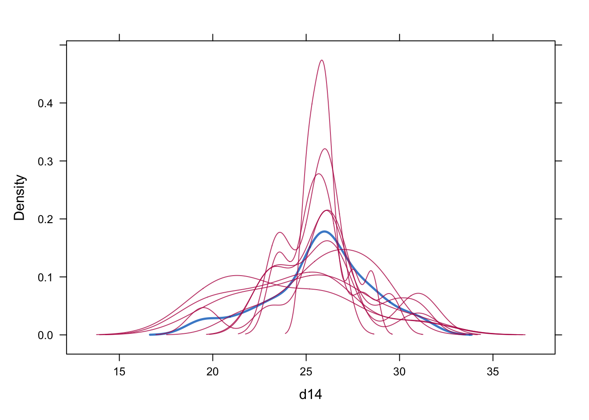

Missing-data analysis targets the full-data estimand under an explicit observation-process assumption. Likelihood/MI methods are generally valid under MAR given an adequate joint or imputation model; ordinary GEE typically requires MCAR, whereas inverse-probability-weighted GEE can be valid under correctly modeled MAR dropout. MNAR requires an unverifiable selection, pattern-mixture, shared-parameter, or sensitivity model.
2. Model specification
Let \(R_{ij}=1\) indicate observation. Mechanisms are \[
\begin{aligned}
\text{MCAR: }&P(R\mid Y_{obs},Y_{mis},X)=P(R\mid X),\\
\text{MAR: }&P(R\mid Y_{obs},Y_{mis},X)=P(R\mid Y_{obs},X),\\
\text{MNAR: }&P(R\mid Y_{obs},Y_{mis},X)\text{ depends on }Y_{mis}.
\end{aligned}
\] MI combines \(m\) estimates with \[
\bar Q=m^{-1}\sum Q_k,\quad T=\bar U+(1+m^{-1})B.
\] For monotone dropout, IPW solves \(\sum_i D_i^{\mathsf T}V_i^{-1}W_i(Y_i-\mu_i)=0\), where \(W_i\) contains inverse estimated observation probabilities.
3. R packages/functions
mice performs multiple imputation and Rubin pooling; wide-format imputation is often convenient for a small fixed visit grid. geepack accepts observation/dropout weights. tidyr::fill() demonstrates LOCF but does not make it valid. naniar visualizes patterns.
4. Data
An incomplete version of nlme::Orthodont is generated reproducibly with monotone dropout after age 10 depending on observed age-10 distance and sex; this is MAR by construction.
MI estimates combine across completed datasets; ubar, b, and total variance distinguish within- and between-imputation uncertainty. IPW coefficients target the marginal mean in the pseudo-population induced by inverse observation probabilities. The dropout logistic coefficients describe association with continued observation, not the scientific outcome model.
7. Diagnostics
if (exists("imp")) {plot(imp) # chain means/SDs by iteration mice::densityplot(imp, ~d14)}

summary(ipw_dat$sw[ipw_dat$R ==1])
Min. 1st Qu. Median Mean 3rd Qu. Max.
0.546 0.926 1.000 0.983 1.000 1.699
For MI, inspect convergence, observed/imputed distributions, transformations, bounds, interactions, and whether the imputation model is at least as rich as the analysis model. For IPW, inspect positivity, extreme weights, dropout-model calibration, and sensitivity to truncation.
8. Caveats
MCAR/MAR/MNAR are statements about the joint full-data/observation process; observed data alone cannot distinguish MAR from MNAR.
Likelihood ignorability under MAR also requires distinct parameters and correct outcome modeling. MI requires congenial imputation/analysis models and inclusion of predictors of missingness and outcome.
LOCF treats an imputed value as known, distorts trajectories and covariance, and is generally unjustified except under a scientifically defensible constant-after-dropout estimand.
Standard mice wide imputation is appropriate for a modest common visit grid; irregular or multilevel data may require two-level methods (2l.pan, 2l.norm) or joint modeling.
Ordinary GEE is not generally valid under MAR dropout. IPW requires a correct observation model and positivity; weighted GEE scale and covariance defaults differ across R/SAS implementations.
Selection and pattern-mixture models are not identified under MNAR without restrictions. Report sensitivity parameters (e.g., delta adjustment/tipping point), not a single unverifiable fit.
EM maximizes the observed-data likelihood under its joint model; it does not by itself add between-imputation uncertainty or make an MNAR mechanism ignorable.
Source-backed: taxonomy, likelihood ignorability, MI, IPW, selection/pattern-mixture models, and LOCF limitations follow the notes. Standard-practice addition:mice/geepack code is the native R implementation.
9. Source references
/Users/wenbinwu/Documents/UNC/26Spring/BIOS767/Lecture-Notes/BIOS-767-Part-018-1.pdf, pp. 8–13, 21–36, 44–62, and 69–87 (mechanisms, likelihood, MI, weighting).
/Users/wenbinwu/Documents/UNC/26Spring/BIOS767/Lecture-Notes/BIOS-767-Part-019.pdf, pp. 4–18 and 24–45 (missing-data examples, MI and weighting).
/Users/wenbinwu/Documents/UNC/26Spring/BIOS767/Lecture-Notes/missing_data_writeup.pdf, pp. 1–8 (likelihood ignorability under MCAR/MAR/MNAR).
/Users/wenbinwu/Documents/UW/25Winter/STAT571/notes/7.0 - Missing_Data_1.pdf, pp. 1–22; /Users/wenbinwu/Documents/UW/25Winter/STAT571/notes/7.1 - Missing_Data_2.pdf, pp. 1–19 (mechanisms and selection models).
/Users/wenbinwu/Documents/UW/25Winter/STAT571/notes/7.2 - Missing_Data_3.pdf, pp. 1–12 (pattern-mixture models); /Users/wenbinwu/Documents/UW/25Winter/STAT571/notes/7.3 - Missing_Data_4.pdf, pp. 1–25 (weighted GEE).
/Users/wenbinwu/Documents/UNC/26Spring/BIOS767/Assignments/Bios767 HW sol/HW4/PROGRAMS_HW4/02-HW4-Descriptive-Analysis.sas, lines 26–44 (patterns and dropout prediction).
/Users/wenbinwu/Documents/UNC/26Spring/BIOS767/Lecture-Notes/BIOS-767-Part-004.pdf, pp. 4–33 (missing longitudinal data and EM algorithm).